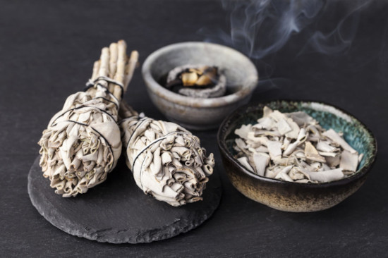

O Reiki xamânico é um tipo de Reiki que também se baseia na transmissão da energia vital universal por meio da imposição das mãos, assim como acontece no Reiki tradicional de Mikao Usui.
O que o diferencia e o torna único e singular são seus rituais indígenas, baseados na filosofia xamânica, a qual entende que o ser humano é uma parte integrante da natureza, da Terra Mãe, e como tal deve respeitá-la, evitando agredir seus ciclos e seu próprio ritmo.
Como o próprio nome diz, essa vertente é inspirada no estilo de vida dos xamãs e coloca o indivíduo em contato com seu interior através da natureza. O Reiki Xamânico utiliza elementos que não são usados no Reiki tradicional, como chocalhos, tambores, cantos, cristais e pedras para transmitir a energia e, no caso dos instrumentos, para também produzir estímulos sonoros.
Existem algumas variações dentro do próprio Reiki Xamânico:
O Reiki xamânico pode beneficiar pessoas de todas as idades, propiciando qualidade de vida e bem-estar e atuando como um grande aliado no tratamento de desordens físicas e mentais, tais como: